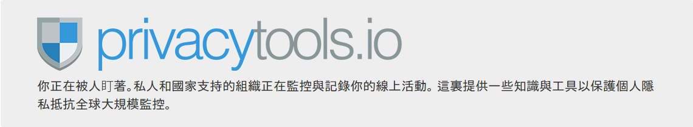

行動電話與智慧型手機雖然為今日的生活帶來許多便利，但我們所忽略的實情是：它們的通訊卻是非常不安全，從手機送出的資訊往往易遭攻擊；而儲存在手機上的資料也同樣脆弱。行動電話輕易地供出了持有者所在位置，手機訊號也容易被竊聽，靠近行動電話的人也可以用便宜的設備監聽來電與讀取訊息(IMSI Catcher，如 stingray)。不只是你的電信服務商可以攔截你未加密的通話與簡訊，監控你所在的位置，當政府要求電信公司交出客戶資料時，業者也多半會輕易地交上客戶的通訊資料。
智慧手機雖然方便隨時隨地上網，但比起傳統的桌機或筆記型電腦，使用者不容易從手機上查看網站原始碼與 DNS IP 等資訊，因此更容易誤入釣魚網站或染上惡意軟體而使自己的帳號資料被盜駭。此外，許多 app 應用程式開發商過度要求用戶在安裝前同意讓其可取得不必要的用戶手機資料存取權限。故請在決定安裝 app 之前，用三秒鐘想想：此應用程式服務商真有必要取得此權限嗎？是否有其它侵害性更少的替代 app 可選擇？
手機容易染上惡意軟體，遠端用戶可以透過惡意軟體將麥克風或相機打開，以聽取或讀取受害人在使用手機的相關資料。即使手機關機了，這種盜錄的情況仍然會發生。最好將用膠布貼住麥克風或攝影鏡頭；進行敏感會議或交談時，建議用戶關掉手機拔下電池。別忘了，當在公共場所或是在一處你不相信的地方使用手機，會讓你曝露在被偷聽的風險下，或是手機容易遭竊其裏面重要的資料也將不保。
手機作業系統或軟體有更新通知時立即進行更新，因為這包括重要的安全漏洞修復。如果沒有更新系統，可能會讓你的手機處於脆弱的危險中。
儘可能只在需要時才啟動定位功能，讓它預設為關閉狀態，以降低自身所在位置被追踪的風險、減少應用程式在後台或是電信業者自遠端進行不必要的個人資料收集，且可大幅節省手機電力。
如果你不知道或無須使用手機上的特別功能或應用程式，就把它們關閉或移除。避免連線到無須密碼的無線網路服務。當不須使用時，確保手機上的通訊管道如紅外線(IrDA), 藍牙與無線網路 WiFi 關閉，只在信任的地點或情況下才使用它們。少用藍牙, 因為它常常相對地容易被偷聽。盡量使用有線線路來傳輸資料。
數位照片與影片常常在用戶自己也不知道的狀況下透露了大量信息。利用手機拍照時往往會嵌入隱藏數據（元數據 meta-data），其揭露了日期、時間和照片的地點、手機類型等等資訊。當我們上傳多媒體檔案時，不僅某些照片和視頻分享網站可能會發布這些元數據信息，政府與企業更是垂涎這些數據，以利其進一步分析利用。最好安裝某些應用程式如 Exif Eraser](for Android); PixlMet(for IOS)，先刪除照片與影片的元數據後再上傳到網路，避免向服務商或不特定對象透露太多個人資料。
確保使用安全密碼進入社交網站，最好採取雙重認證的登入設定。如果他人駭入您的帳戶或知道了您的密碼，他們就能通過該社交網站得到您和您朋友的大量信息。建議使用密碼管理軟體（如 KeePassX），除了不忘定期更換密碼外，也避免只用單一密碼來登入不同網站。
在社交網站上發表個人動態前先想想：
尤其是在分享影片/照片前，要知道：照片和影片視頻容易暴露人們的身份。您發布的任何照片或影片都應得到被拍攝者的授權允許。若您在網路上發布別人的照片，必須清楚地意識到這將露暴了他人的個資，而接下來的後果往往是當事人所無法控制與預測的。所以，在未得到別人同意下，請不要擅自把別人的影片或照片發佈到網路上。
請務必仔細檢查自己的臉書隱私設置，尤其留意這家互聯網巨頭公司的隱私政策一直變動。
「加成好友」意味著您在和另一名用戶建立直接聯繫，且允許他們看到您在臉書上的個人資訊和活動，故最好只加那些您夠信任的朋友。
每次退出臉書時不妨考慮註銷帳戶。這意味著當您不在線時，此帳號會被鎖定，讓別人看不到它。當下次登入臉書時，再重新激活帳號，您所有的設置都會保持不變，也可以避免一直被臉書的追踪器掌握您瀏覽了哪些網站。
data selfie 是一個開源的 Chrome 外掛，可幫助用戶了解自己在臉書上的行為動態，並具有強大的數據分析與人格特色演算推測。換言之，它可以幫助你了解 FaceBook 眼中「你」是什麼樣的傢伙，一個連自身都未曾察覺的個人資訊側寫(Personal Profiling)。
確保網路連線存取可安全瀏覧，因為網路連線服務商(ISP)會進行網路監控與用戶瀏覽記錄收集。如果未使用安全網路連線軟體，不僅是揭露了自己的地點位置和網路瀏覧閱讀內容，ISP 業者也可以用來過濾、監視甚至屏蔽某些網站。安全的網路連線工具，如 VPN 或是 TOR 瀏覽考量了這些情況，提供各種方法來保護網路連線安全，當電腦透過這些安全軟體連上網際網路時，可稍防衛與隱匿電腦與IP地址。
進一步了解利用虛擬私人網路 (VPN)，可參考網路隱私工具上相關的整理。
安裝 HTTPS EVERYWHERE 與 PRIVACY BADGER瀏覽器延伸套件,它們可幫助確保用戶訪問網站的安全連線版本(https)，並且用戶可自行控制網站的監測使用狀況。
Umbrella App 由 Security First 開發維護的智慧手機應用軟體，其提供了從入門到進階的豐富安全資訊。目前已初步完成其內容資訊的中文化初稿，並由 twngo.xyz 先以網頁形式發佈，預計在明年會將中文內容整合入 apk。
Safeguard defenders，主要關注亞洲地區的人權捍衛者處境，尤其如何對抗集權國家資源投助的網路長城封鎖以及其國安情治系統威脅監控。因該網站受到當局嚴重「關切」，Safe guard defenders 須不時躲避各式技術攻擊，以維持其網站訊息正常運作。請見 China Change 的介紹（中、英文）：In Search of Better Digital Protection for Human Rights Defenders In China
較之本站羅列許多以末端用戶為主的數位安全資訊，LevelUp 的定位則是以傳播擴散（數位）安全資訊的教育講師為對象，以訓練員為主導的安全教材交流園地。其內容涉及有效成人的教育訓練討論、心理壓力調適，故建議適合的讀者群為：人權教育工作者、心理諮詢師等。
不論是線上虛擬平台還是下線真實世界，和朋友家人討論網路的好壞之處，並提出你自己的想法。我們不應把便利的科技視為理所當然，除了理解與感謝許多人打造了今日豐富的數位生活外，也不妨思考自己如何能為促進科技的良善應用，稍盡一點力量。
Localization Lab 是一個由全球各地志工組成的網路社群，透過各種語言的翻譯與在地化推廣，促進各種對抗言論審查、保護隱私等網路自由工具的使用。你可以自主地參酌自己能貢獻的時間心力，例如每週1~2小時，持續投入不同開源軟體或資安教材的中文翻譯或內容校對。
twngo.xyz
是一個稟持駭客反叛精神，不遵守台灣結社法令規定的非營利組織。如果你認同網路科技對人類朝向自由解放的重要，不滿集中化單一獨大的壟斷控制，支持分散自主節點的多元意見呈現交流，手邊又有一點買球賽演唱會門票菸酒零食後找剩的零錢，歡迎自由捐款,可收
若有其它詢問或建議可來信： hello@twngo.xyz PGPkey fingerprint: 936A 2F69 270A 8A6D A3C9 4CE6 B218 1C6C E759 3169 ）。